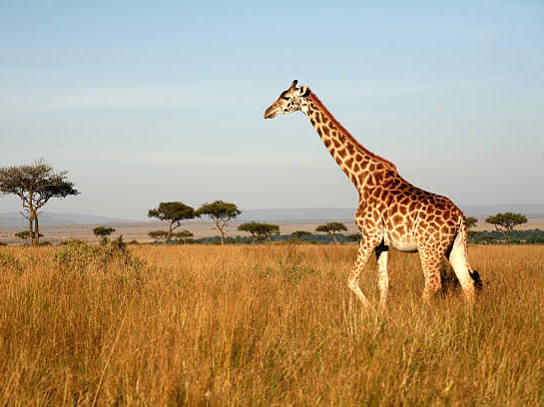

Giraffes tend to be more active during the early and late hours of the day. When it's the hottest part of the day, they spend time resting. In cooler weather, they tend to be much more active. Giraffes use their necks to reach leaves high in trees, using their tongues to pull leaves off the branches. When giraffes are looking for food, they walk slowly. Giraffes rest while lying down or even standing up. They tend to communicate through their body movement or their social interactions, which are gentle interactions. Examples of gentle interactions consist of hand-feeding leaves, or head resting.
The behaviors to look out for in a giraffe is their lower head height, which helps bring their head down to the human eye level which signals that they're comfortable around humans. Somme ways to tell if they're stressed or upset is, if they back away, head swings, or pinned back ears.
Giraffes reproduce is sexually and have a gestation period that is approximately 14-15 months. In which, the amount of offspring's had are usually one. The birth height pf a calf is approximately 5-6 feet, meanwhile the weight is approximately 45-70kg.